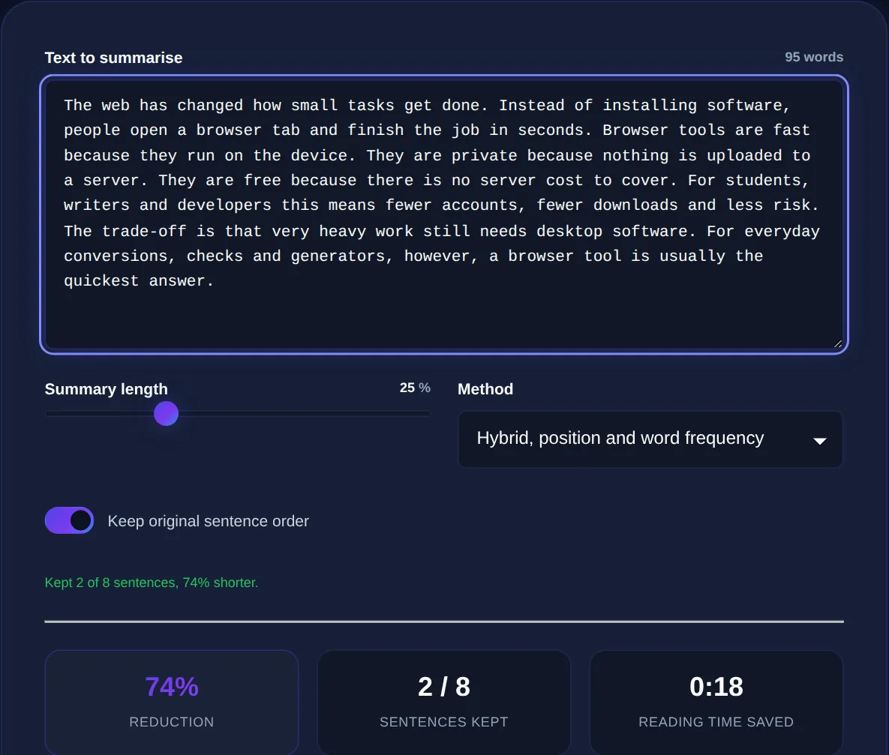

How Text Summarizers Work and When to Use One
The difference between extractive and abstractive summaries, what summarizers do well, and where human judgement is still essential.
By Mubasher Hussain · Published 2026-07-28 · Updated 2026-09-01 · 1074 words · about 5 minute read
A text summarizer condenses a long piece of writing into a short version that keeps the main points, turning a wall of text into a quick, readable gist. It is useful whenever you have more to read than time to read it, a long article, a dense report, a wordy email thread. The Text Summarizer produces a summary in your browser, and this article explains how summarizers work, what they do well, and where you still need to read the original yourself.
Understanding the two main approaches to summarization, and their limits, helps you use the tool wisely: as a way to triage and preview text, not as a replacement for reading anything that truly matters.
Extractive versus abstractive summaries
There are two fundamentally different ways to summarize. An extractive summarizer selects the most important existing sentences from the text and stitches them together, it does not write anything new, it picks and pulls. This is reliable and faithful to the source, since every word came from the original, though the result can read a little disjointed. An abstractive summarizer instead generates new sentences that paraphrase the meaning, the way a person would when explaining something briefly. This reads more smoothly but is harder to do well and can occasionally introduce errors or claims not quite supported by the source. Many everyday summarizers, especially lightweight in-browser ones, use the extractive approach because it is fast and dependable.

How extractive summarizing decides what matters
An extractive summarizer has to judge which sentences are most important, and it does this with sensible heuristics rather than true understanding. It looks for sentences containing the words that appear most frequently across the text (on the assumption that repeated terms signal key themes), sentences near the beginning of paragraphs or the document (where main points often sit), and sentences that connect strongly to others. By scoring every sentence on such signals and keeping the top few, it produces a summary of whatever length you ask for. It is a clever approximation of importance, and it works well for well-structured, factual writing.
Summarizers are excellent for deciding whether something is worth reading in full, or for a quick refresher. But for anything where nuance, accuracy or detail matters, a contract, a medical article, a decision, read the original. A summary necessarily leaves things out.
What summarizers do well
Used for the right jobs, summarizers save real time:
- Triage: quickly judging whether a long article is worth reading in full.
- Previews: getting the gist of a report before a meeting.
- Refreshers: reminding yourself of a document's key points.
- Study aids: condensing notes into their essentials.
- Drafting: producing a rough summary you then refine by hand.
In all of these, the summary is a starting point that you remain in control of, not a final answer you accept blindly.
Where human judgement is still essential
Summarizers have real limits worth respecting. They can miss the single most important sentence if it does not match their heuristics, over-represent a repeated but minor point, or strip out the nuance and caveats that change an argument's meaning. Abstractive summarizers can occasionally state something the source did not quite say. And no summarizer understands significance the way a human does, it cannot know that one sentence is the crux and another is an aside. For anything consequential, treat the summary as a map, then read the territory. The tool handles the mechanical compression; you supply the judgement about what actually matters.
Condense long text into its key points at the length you choose, entirely in your browser, your text is never uploaded.
Summarizing within a reading workflow
A summarizer fits naturally alongside the other tools for handling text. Checking the length of both the original and the summary with a word counter tells you how much you have compressed, a readability checker confirms the summary is clear, and a text-to-speech tool can read a summary aloud so you can absorb the gist while doing something else. Together they turn an overwhelming amount of reading into something manageable.
Summarizing responsibly and privately
Two cautions make summarizing both more useful and safer. The first is about trust: because a summary omits by design and, in the abstractive case, can occasionally distort, you should never present a machine summary of someone else's work as if it were your own careful reading, especially in academic or professional contexts where accuracy is your responsibility. A summary is a tool for your own comprehension and triage; the accountability for what you then claim about the text remains yours, which means reading the original whenever your use of it matters to others.
The second is about privacy. The documents people most want to summarize are often the ones they least want to expose, an internal report, a confidential contract, an unpublished draft, a private email thread. Many online summarizers upload your full text to a server to process it, which means a copy of that sensitive material now exists on someone else's system. A summarizer that runs entirely in your browser processes the text on your own device, so nothing is transmitted, and you can safely condense confidential material without a privacy trade-off. Together these two habits, treating the summary as a preview you remain accountable for, and keeping sensitive text on your own machine, let you get the genuine time-saving benefit of summarization without the risks of over-trusting a machine's judgement or leaking private documents. Used that way, a summarizer becomes a dependable part of managing more reading than any of us has time for.
To recap: text summarizers condense long writing into its key points, using either an extractive approach that selects the most important existing sentences or an abstractive one that paraphrases in new words. Lightweight tools usually extract, scoring sentences by signals like word frequency and position. They excel at triage, previews and refreshers, but they leave things out and lack real understanding of significance, so anything that truly matters still deserves a full read. Use a summarizer to decide what to read and to get a fast gist, and keep your own judgement in charge of what the text really means.